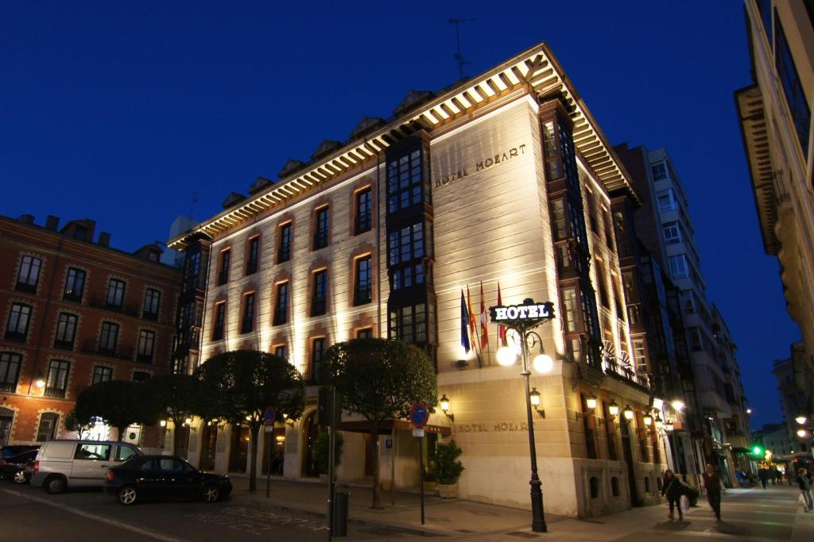
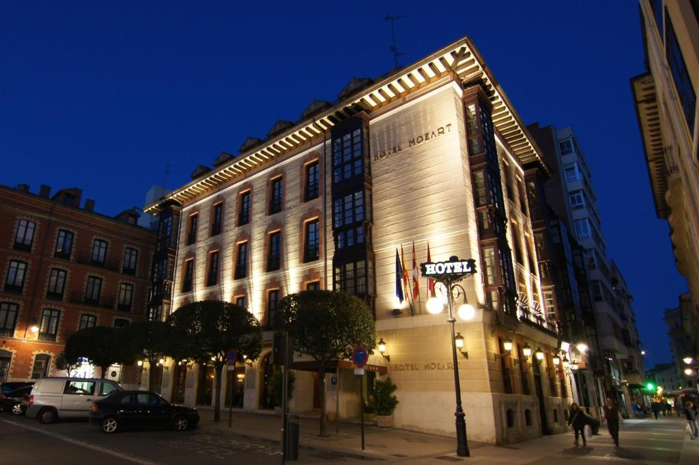
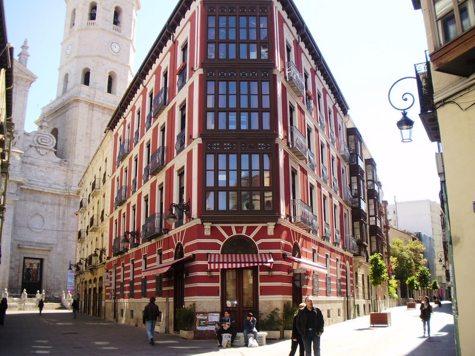
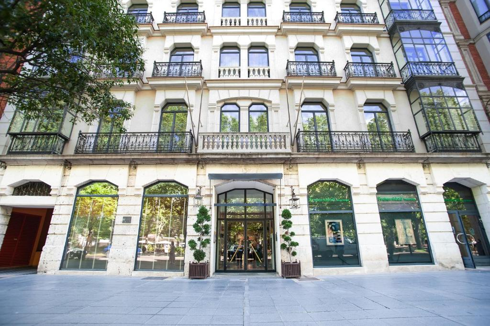
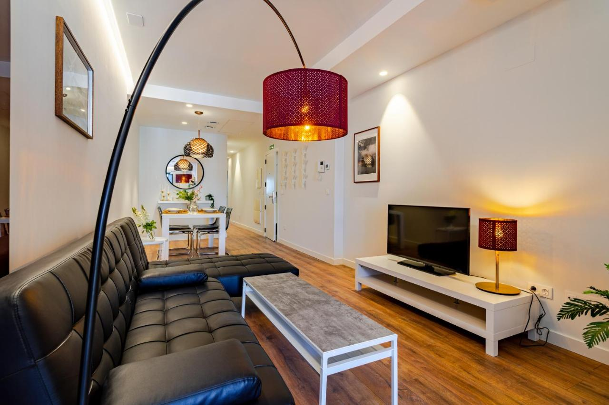
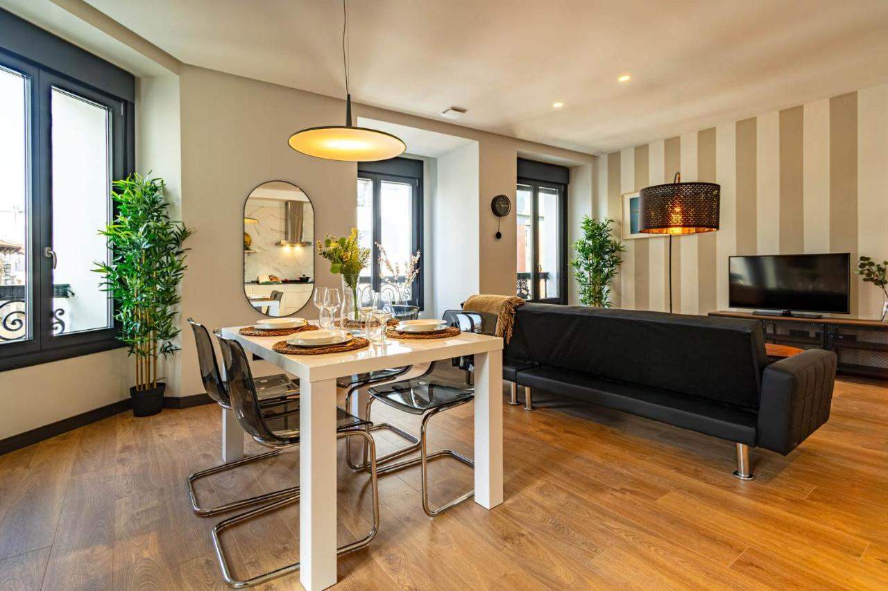

Hotel Mozart
Ubicación: Centro
Estrellas: 3
Situado en un edificio tradicional del S. XVIII en el centro de Valladolid, el hotel Hotel Mozart ofrece modernas habitaciones con TV de pantalla plana y aire acondicionado.

Dormir en Valladolid es una opción muy cómoda y barata, si comparamos los precios de los hoteles con los de otras ciudades españolas como Madrid o Sevilla. Por 50 € tenéis habitaciones dobles en hoteles de cuatro estrellas.
Para una escapada de fin de semana a Valladolid, la mejor opción es buscar un hotel cerca de la Plaza Mayor, Plaza de España o la Catedral.
Por el contrario, el mejor lugar donde alojarse en Valladolid si el viaje es por alguna feria o evento es la Feria de Muestras. De todos modos, Valladolid es una ciudad muy cómoda para recorrer caminando, por lo que cualquier zona os pillará a un paseo del casco antiguo.
Ubicación: Centro
Estrellas: 3
Situado en un edificio tradicional del S. XVIII en el centro de Valladolid, el hotel Hotel Mozart ofrece modernas habitaciones con TV de pantalla plana y aire acondicionado.
Ubicación: Centro
Estrellas: 4
Este hotel ocupa un edificio histórico que data del siglo XVI y está situado en pleno centro de Valladolid, en la región de Castilla y León, al norte de España.
Ubicación: Recoletos
Estrellas: 5
Este hotel elegante, situado en el centro histórico de Valladolid, ofrece habitaciones bonitas decoradas con colores vivos. La terraza y la biblioteca tienen conexión WiFi gratuita.
Ubicación: Centro

Ferrari Suite Estudios es un nuevo concepto de establecimiento de hostelería alternativo e ideal tanto para estancias cortas como largas en Valladolid, estancias con familia, amigos o de trabajo.
Ubicación: Centro
Dispone de salón-comedor, cocina totalmente equipada, baño de lujo con ducha hidromasaje y balcón exterior.
Ubicación: centro
Totalmente amueblado, tiene una capacidad para un máximo de dos personas. Situados en la misma Plaza Mayor de Valladolid. Recientemente reformado, Estos Lofts de Valladolid son ideales para hacer turismo por la ciudad sin renunciar a la comodidad de tu casa.